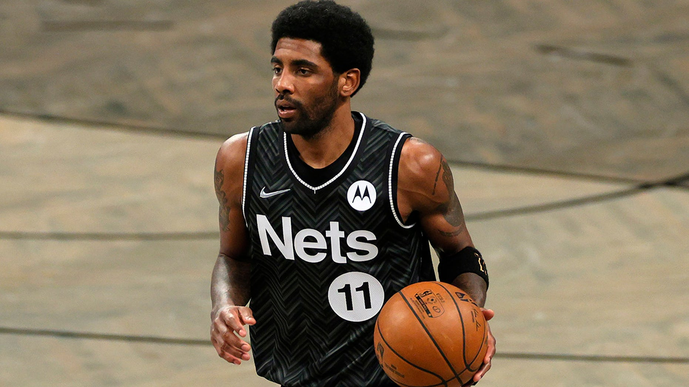
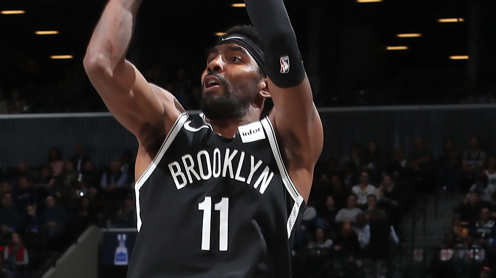

Kyrie Irving
凯里·欧文（Kyrie Irving），1992年3月23日出生于澳大利亚墨尔本，拥有美国/澳大利亚双重国籍，美国/澳大利亚职业篮球运动员，司职控球后卫，效力于NBA布鲁克林篮网队。
重要事件
- 2016年1月5日，骑士主场122-100大胜猛龙，凯里·欧文出场29分钟，得到25分、6个篮板和8次助攻，职业生涯首次在上场时间不足30分钟的情况下，至少拿到25分6篮板8助攻的数据。
- 2016年2月9日，骑士主场120-100击败国王，凯里·欧文出场35分钟，得到32分和12次助攻，职业生涯第二次单场至少得到32分12助攻的数据。
- 2016年4月18日，季后赛首轮骑士106-101击败活塞，凯里·欧文出场38分钟，得到31分、5个篮板和6次助攻，刷新职业生涯季后赛单场得分纪录。
- 2016年6月11日，总决赛第4场骑士主场对阵勇士，凯里·欧文出场43分钟，得到34分、4个篮板、4次助攻和3次抢断，刷新职业生涯季后赛单场得分纪录。
- 2016年6月14日，总决赛第5场骑士骑士客场112-97击败勇士，凯里·欧文出场40分钟，得到41分和6次助攻，刷新职业生涯季后赛单场得分纪录。
- 2016年6月20日，总决赛第7场骑士客场93-89力克勇士，凯里·欧文全场贡献26分和6个篮板，在比赛还剩53秒时投中关键三分，帮助骑士以总比分4-3战胜对手，为克利夫兰骑士队赢得队史第一座NBA总冠军奖杯。
主要成就
| 获奖时间 |
奖项名称 |
获奖结果 |
| 2014 |
西班牙男篮世界杯最佳阵容+MVP |
获奖 |
| 2014 |
2014年美国篮协最佳男运动员 |
获奖 |
| 2014 |
西班牙男篮世界杯冠军 |
获奖 |
| 2016 |
2015-16赛季NBA总冠军 |
冠军 |
| 2017 |
2017年全明星东部首发阵容 |
获奖 |
| 2018 |
2018年全明星东部首发阵容 |
获奖 |
| 2019 |
2018年全明星东部首发阵容 |
获奖 |
照片


人物争议
2021-22赛季初，欧文拒绝接种疫苗，因纽约市相关防疫规定，无法出战主场比赛。10月13日，篮网宣布欧文不会参加球队的任何比赛或训练，直到他符合纽约地区的防疫规定。10月14日，欧文在社交平台开启直播，表示自己不会因为最近发生的事情而退役，随后解释自己不打疫苗的原因是出于支持那些“因为强制疫苗政策而丢掉工作的人”